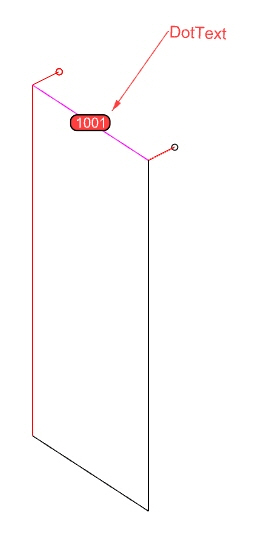

DotText
DotText는 Wire Frame 전체의 Unit 번호를 표시하는 Dot 객체입니다.
이후 가공도 작성이나 리스트 산출 과정에서 Unit 번호를 인식하기 위한 기준 정보로 사용됩니다.
Dot 명령을 실행합니다.
| 항목 | 설명 |
|---|---|
| 레이어 | 원하는 Layer를 사용할 수 있습니다. |
| 작성 명령 | Rhino 기본 Dot 명령을 사용합니다. |
| 사용 목적 | 가공도 작성과 리스트 산출 시 Unit 번호를 인식합니다. |
| 명령어 | 설명 |
|---|---|
Mullion Line | 세로 방향 Mullion 기준선을 정의합니다. |
Transom Line | 가로 방향 Transom 기준선을 정의합니다. |